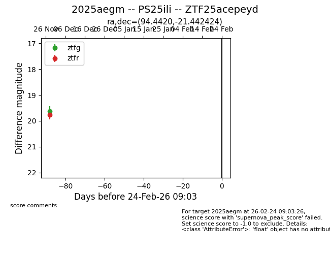
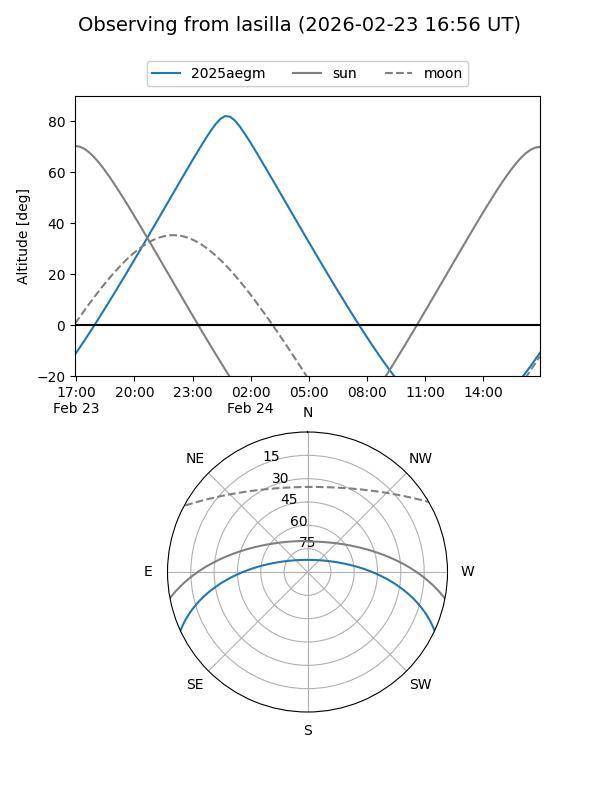
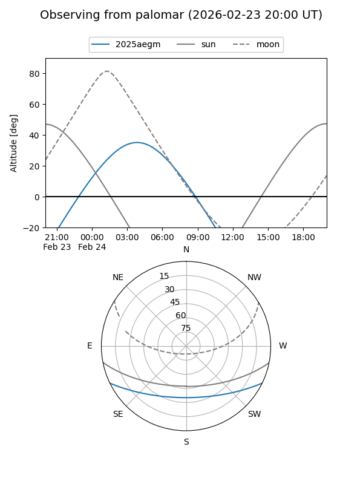

2025aegm
Target 2025aegm at 2025-12-31 17:59
Aliases and brokers:
FINK: link
Lasair: link
ALeRCE: link
TNS: link
YSE: link
alt names
ZTF25acepeyd (ztf,fink_ztf)
2025aegm (tns,yse)
Coordinates:
equatorial (ra, dec) = 94.4420,-21.44242
equatorial (HMS+DMS) = 06:17:46.08,-21:26:32.73
galactic (l, b) = (228.8857,-16.73560)
Flags:
Photometry:
last ztfg=19.62, ztfr=19.77
1 ztfg, 1 ztfr detections
Lightcurve

Visibility


Additional plots